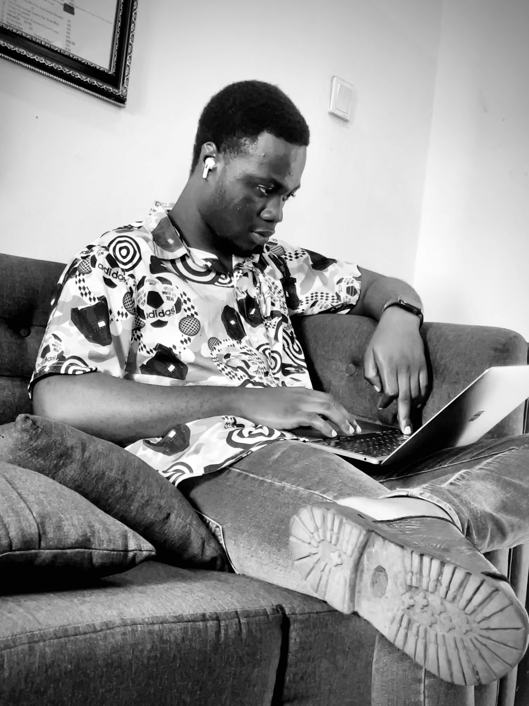

Ibiwoye Joshua

Summary
I am a brand designer, web designer, product designer, producer, web developer, keyboardist and passionate for tech and music. I love God and i love being the best at what i do and love.
Skills: Adobe Photoshop, Illustrator, Figma, HTML5, Blender 3D, Microsoft Suite.
Education
-
Undergraduate, BSc Social Work - Ilorin, Kwara State, Nigeria.
Work Experience
-
Brand and Web Designer - Mastermind Recovery
January 2023 - Till date
-
Made appeling and top notch consistent brand designs.
-
Designed a consistent, appealing, interactive and user friendly web design for the company's website.
-
Managed social media contents and designs.
Skills: Adobe Photoshop, Illustrator, Figma, HTML5, Blender 3D, Microsoft Suite
-
Brand and Web Designer - Graceland Psychiatry
March 2022 - Till date
-
Made appeling and top notch consistent brand designs.
-
Designed a consistent, appealing, interactive and user friendly web design for the company's website.
-
Managed social media contents and designs.
Skills: Adobe Photoshop, Illustrator, Figma, HTML5, Blender 3D, Microsoft Suite.
-
Brand and Web Designer - Graceland Wheels
July 2022 - October 2023